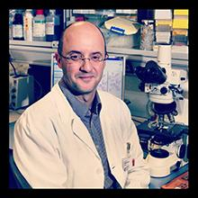
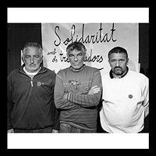
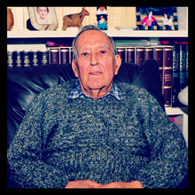
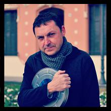
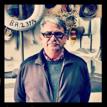
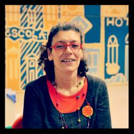
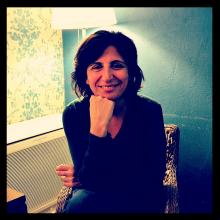

-
.jpg)
Mª Àngels Martínez
"Llana i ganxet no és sinònim de iaia i tapete"
-

Maite Forteza
"Les persones amb discapacitat són una realitat desconeguda per la nostra societat"
-
Huma Jamshed
"Lluitem perquè la dona pakistanesa deixi de ser invisible"
-

Pere-Joan Cardona
"L’Institut de Recerca de Can Ruti és com un somni impensable fa 20 anys"
-

Alexandru, Viorel i Nicolae
"Continuarem amb aquesta lluita fins aconseguir el que ens pertany"
-

Carmelo Rubio i Manolo Valdenebro
"No volem que s’utilitzi l’Associació Veïns Amics Gorg Mar amb interès polític"
-
_2.jpg)
Francesc Alfambra
"El nostre Ajuntament té miopia mediambiental"
-

Abel Mariné
"En certa manera, a Dikayos es produïa la 'lluita de classes' de la societat badalonina"
-

Inas Ahbiti i Pedro Herrero
"La castellera més menuda i el diable més experimentat"
-
Especial Festes de Maig
"Els Gegants, els Diables i l'Orquestra"
-

Maria Cané
"Lilith fou el primer centre en ajudar a la dona badalonina maltractada"
-

Abdelkrim Latifi i Àngela Cintas
"Cal construir ponts de diàleg entre ‘les dues Badalones’"
-

Iu Forn
"Badalona mai ha tingut un projecte de ciutat"
-

Jordi Monés
"Espriu va formar part de l’oasi badaloní de postguerra"
-

David Moya
"La història de Badalona té gust a pastanaga, planta artemisa i malta fumada"
-

Montse García
"Xavier García Albiol no dóna lloguers socials sinó titulars populistes"
-

Agustí Argelich
"Filmets és un planter del cinema badaloní"
-

Jaume Cañas
"Badalona viu dʼesquenes al mar"
-

Pilar López
"A Sant Roc calen més educadors i menys comissaries"
-

Sílvia Soler
"Sóc badalonina de Figueres"